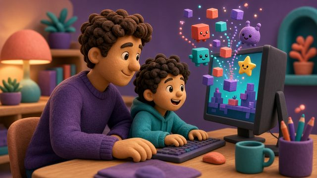

No-code & Kids
Scratch
Free block-based coding from MIT where kids make and share games and stories.
15 tools that fit kids — picked for difficulty and each tool's official age rules.

Free block-based coding from MIT where kids make and share games and stories.
Free block-and-JavaScript editor for retro arcade games in the browser.
Design and share Mario levels — a fun intro to level design.
Nintendo's guided visual programming game that teaches game logic step by step.
Free tool to build and publish Roblox experiences in Luau, with built-in monetization.
Open-source no-code engine for 2D and 3D games, with one-click export.
Tiny browser editor for small pixel-art narrative games.
Open-source tool for interactive, nonlinear text stories.
Free voxel art editor and renderer for blocky 3D models.
Generate retro sound effects (jumps, coins, explosions) in one click.
Age info reflects official terms and ratings as of 2026-10-13; always check the official site.
Browser-based no-code 2D engine using event sheets.
Free, open-source digital painting app for concept art and 2D assets.
Thousands of free, public-domain (CC0) game assets for prototypes and releases.
Open-source remake of the classic Bosca Ceoil — a simple music maker loved for game jam soundtracks.
Classroom edition of Minecraft with coding lessons via MakeCode and Python.